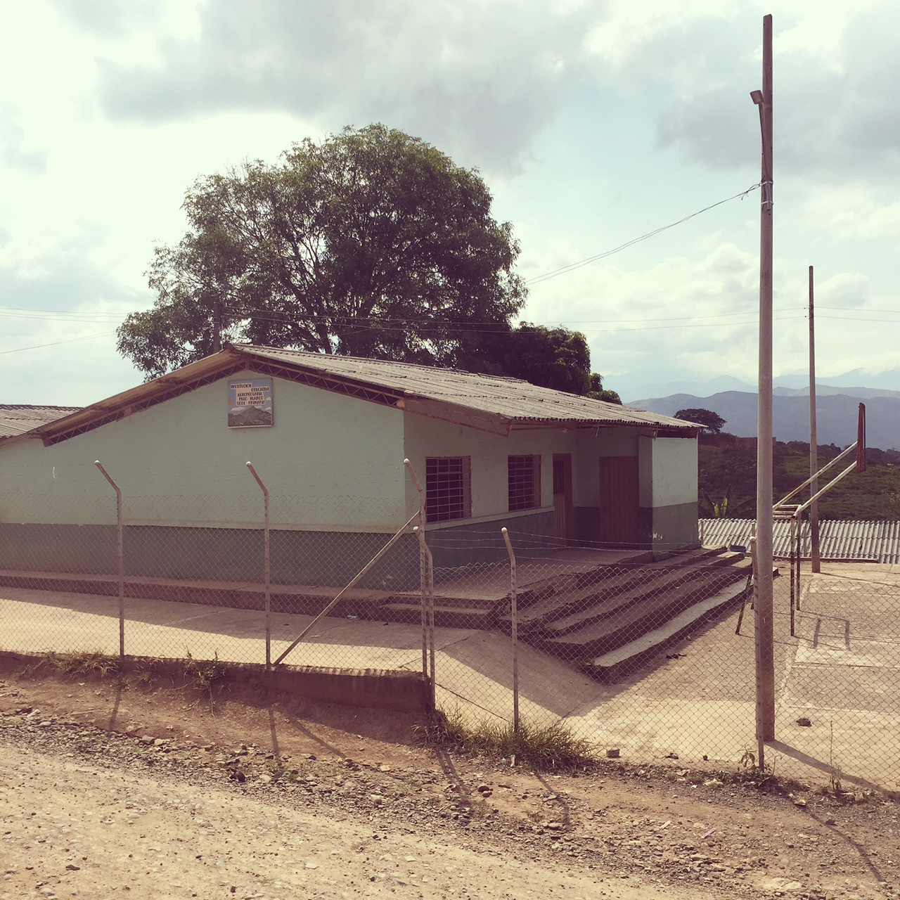

Portfolio
I have had strong participation in these projects.

cvTraffic
We implemented a vehicle classifier using OpenCV (C).

smaps
Web platform for Intelligent Transport Systems.

Bariatrack
Mobile app using Ionic.

Centro Memoria
Colombian armed conflict dashboard.
Geo Tweets
Tweets visualization according to topic and geolocation.
Services
I can help you researching, designing and developing software products.
Arquitectura de Software
He diseñado arquitecturas para aplicaciones web, sistemas de control de tráfico, transporte público y aplicaciones móviles.
Desarrollo de software
He participado en el desarrollo de software en diversos proyectos con diversos lenguajes de programación (C#, Javascript, PHP, C, Python).
Formulación de proyectos
He trabajado en la formulación de proyectos de investigación y desarrollo tecnológico, basado en la aplicación de las ciencias de la computación a diversos campos (transporte, electricidad, salud, educación).
About
Reno's timeline
-

1993 - 1997
Buenos Aires, Cauca.
En la imagen el Centro Educativo Paloblanco, donde estudié la primaria. Crecí en las montañas de Buenos Aires, en donde me pasé el tiempo jugando más que cualquier otra cosa. -
1998 - 2003
Aprendí mecánica industrial
Estudié la secundaria en el Instituto Tecnológico de Santa Rosa de Cabal (Risaralda) y me especialicé en Mecánica Industrial. Cuando logras hacer un piñon se siente la misma satisfacción que cuando escribes un programa que funciona : )
-
2004 - 2009
Universidad Tecnológica de Pereira
Estudié Ingeniería de Sistemas y Computación en la Universidad Tecnológica de Pereira.
-
2007 - 2015
Grupo Sirius
Sirius es un grupo de desarrollo tecnológico con diversas líneas de investigación. Trabajé allí varios años en proyectos con múltiples tecnologías, incluyendo arquitectura software, aplicaciones web, protocolos de comunicación, sistemas de simulación de tráfico, FPGAs, entre otras. Fui parte del programa Jóvenes Investigadores de Colciencias, desarrollé y registré algunos productos de software, asistí a muchas conferencias y ayudé a organizar otras.
-
2014 - 2015
Centro de Innovación y Desarrollo Tecnológico de Pereira (CIDT)
Trabajé en la línea de Sistemas Inteligentes de Transporte (ITS) del CIDT. Terminé la segunda versión de la Arquitectura ITS y trabajé con el Área Metropolitana Centro Occidente para iniciar su implementación a través del desarrollo de una plataforma web (smaps).
-
2016 - 2018
Centro de Bioinformática y Biología Computacional de Colombia - BIOS
Trabajé en el área de Bioingeniería, específicamente en proyectos relacionados con el sector salud. Promoví la adopción de diversas tecnologías y técnias de gestión y desarrollo de proyectos de software que mejoraron sustancialmente las condiciones y resultados del equipo de trabajo.
-
Are
you
next?